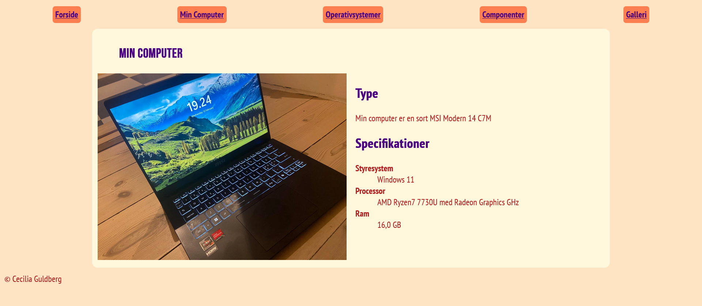
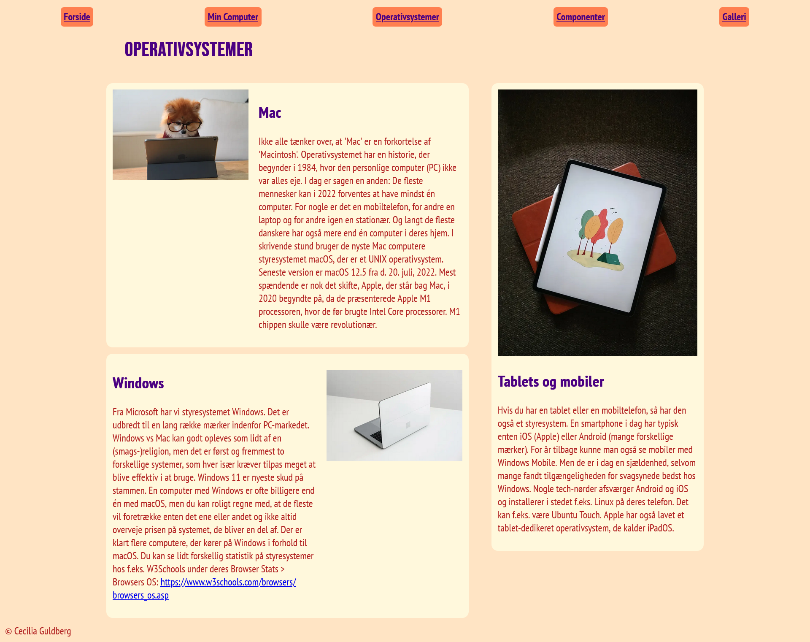
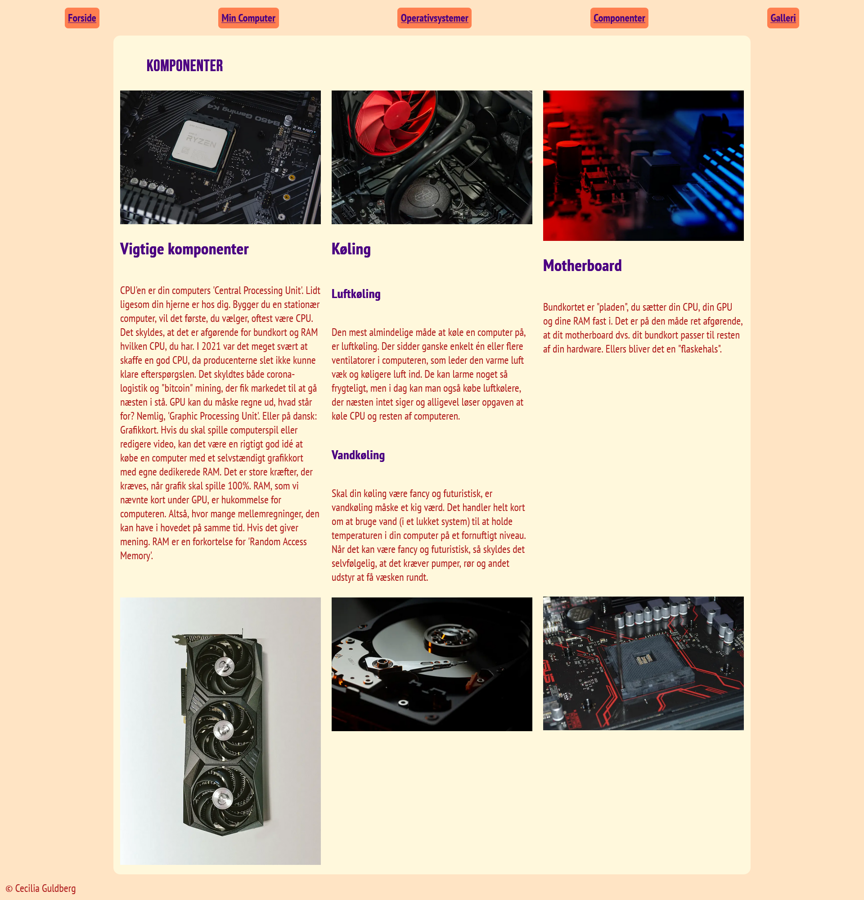
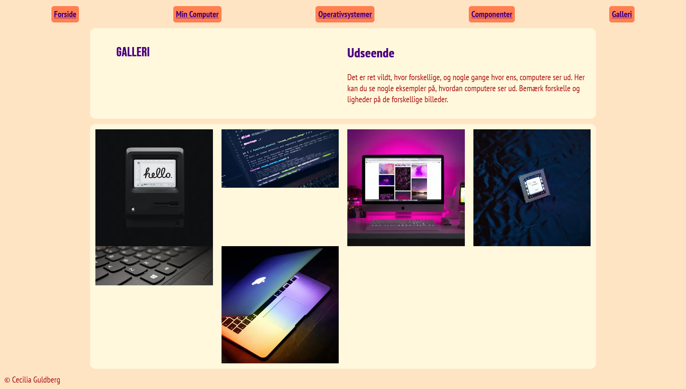

Web
I tema 2, ved navn grundlæggende web, fik vi tildelt en opgave, som var delt op i to. Første del af opaven, gik ud på, at opbygge den første version af vores website: en grundstruktur med undersider og navigationsmenu. Siden skulle kodes mobile-first, derfor startede vi med mobilsiden.
Når denne side var færdig, skulle vi arbejde videre med den, så den også virkede på desktop. Indhold og billeder til siden blev udleveret af underviserne, bortset fra det der skulle på “Min Computer”-siden, dette måtte vi selv tilføje.
Siden skulle følge det udleverede wireframe og layoutdiagram, have to forskellige fonter, og der skulle være farver.
Herunder er begge de forsider, jeg endte med, mobilsitet (venstre) og websitet (højre)
I løbet af løsningen af denne opgave, lærte jeg nogle af de basale ting ved html og css, som de forskellige classes (forskellige listetyper, at linke fra en side til en anden, at benytte id- og class-navne) og især styling. Jeg lærte blandt andet at style navigationsmenuer, hvordan man bruger forskellige fonte, at bruge grids i css til at lave et specifikt layout. Generelt fungerede temaet, som en måde at få brugt de grundlæggende funktioner i html, men især i css.
Herunder kan min fulde løsning af opgaven ses:
   